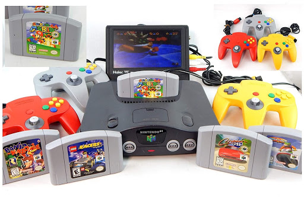

Welcome to the origins of Video Gaming
 The Nintendo 64. Where three dimensional shapes take flight. One of the first notable games to own on the Nintendo 64 was Super Mario 64. Here, you go an adventure to save the lovely Princess Peach, the queen of Mushroom Kingdom. Your arch enemy is the infamous Bowser, or King of the Koopas as previously names in the Nintedo version of Super Mario. Other games on the Nintendo 64 that were similar to the Super Mario 64 3-D world include Banjo Kazooie and who can forget the Legend of Zelda the Ocarina of Time!
 But video games didn't stop improving... along comes the Playstation Console. Keep in mind, a lot of video game consoles were
competing at the time. So many consoles were released between the 1990s and 2000s, for example the Sega Dreamcast, the Sega Saturn,
and even hand-held consoles such as the gameboy and gamegear. And oh by the way, coming on the rise was Microsoft Windows (PC)
releasing titles such as Quake and Half-Life.
But video games didn't stop improving... along comes the Playstation Console. Keep in mind, a lot of video game consoles were
competing at the time. So many consoles were released between the 1990s and 2000s, for example the Sega Dreamcast, the Sega Saturn,
and even hand-held consoles such as the gameboy and gamegear. And oh by the way, coming on the rise was Microsoft Windows (PC)
releasing titles such as Quake and Half-Life.